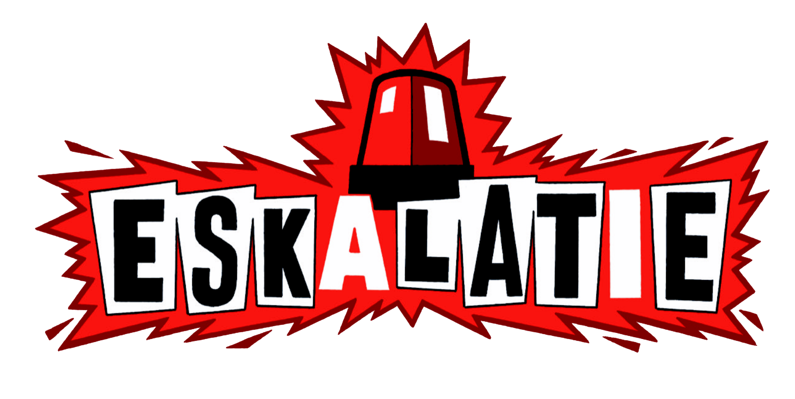
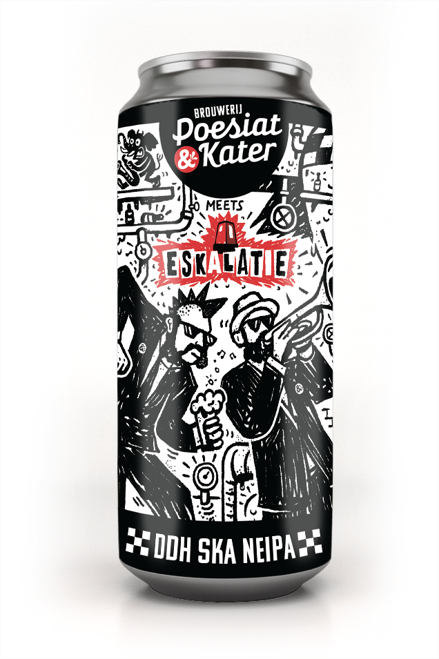

12-koppige skaband uit Haarlemtown
Welkom ieder en allen op de webpagina van Eskalatie! Op deze pagina vindt u alles over de Haarlemse skaband Eskalatie. Misschien dat dat nog wel van pas komt als u meedoet aan een pubquiz over 40 jaar. Vindt u deze pagina nou leuk? Dan kunt u het liken, door naar een van ons toe te komen voor, na of tijdens een optreden en het te benoemen.
Sinds kort hebben wij ook InstagramSingle Totale Eskalatie/Bellenblaasmachine
Bij het Amsterdamse label Wap Shoo Wap records hebben we op 27 Februari 2026 onze eerste single uitgebracht! De nummers Bellenblaasmachine en Totale Eskalatie zijn vanaf heden overal op het internet te vinden en belangrijker nog, op vinyl te verkrijgen. Als mega mooie bonus hebben we er zelfs een videoclip bij voor Totale Eskalatie, te vinden enkele centimeters hieronder op uw scherm.
Koop hier de single!
DDH SKA NEIPE
Naast de prachtige single hebben wij ook nog een heerlijk biertje uitgebracht, daarvan gaat de single namelijk nog beter klinken. De meesterbrouwers van brouwerij Poesiat & Kater (waaronder onze eigen trompettist Miguel) hebben een heerlijke DDH SKA NEIPA in elkaar gezet. Nu zijn wij natuurlijk geen echte kenners, dus raad ik zeker aan om het zelf te proberen, zodat u ook weet hoe lekker hij is.
Koop hier het biertje!

Downloads
Stel je bent dus een poster aan het maken of je wil een mooi ontwerp voor je bootleg-cassette, dan kan je hier ons logo etc downloaden.